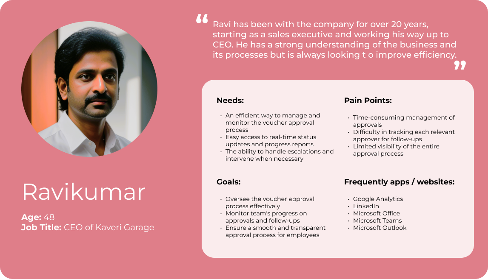
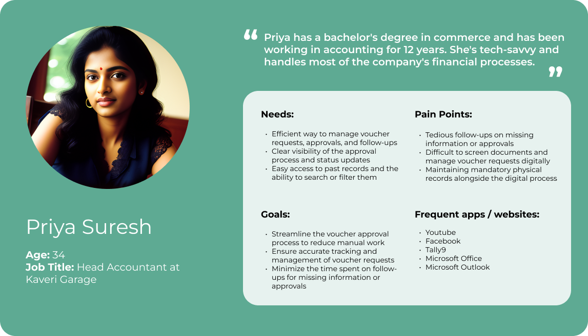
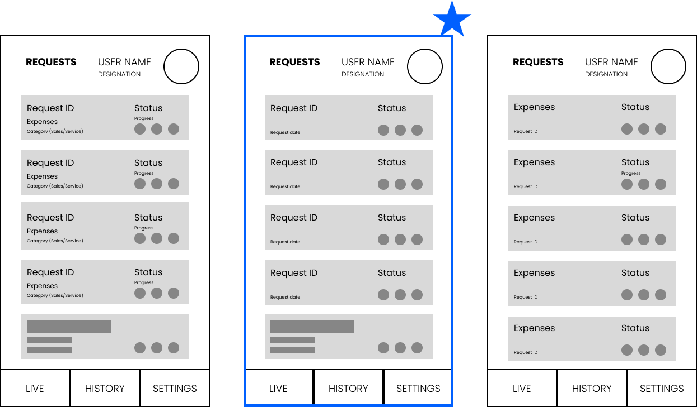

Team
Veeramanoharan (Product Designer)
M. Yaseen (PM)
Naveen (Software Engineer)
Tools
Figma
Photoshop
Illustrator
Timeline
Four weeks
2020
Brief
Redesign the cash voucher approval process for managers and employees at Kaveri Garage, an authorized TATA
Motors dealership in Tamil Nadu, with the goal of simplifying and streamlining the experience while
addressing pain points in the current manual process.
Problem
What is a cash voucher?
A cash voucher is a document that acts as proof of a cash transaction. It is used to bookkeep transactions
and validate cash payments made for business expenses like Food, Travel etc. It typically involves several
levels of approvals from managers and CEO before the amount is settled to the employee.

Employees collect the bills and submit at the office with a voucher

However, there are several problems with the overall cash voucher/ reimbursement process. Some of the key problems are:
Problem #1: Lack of timely updates lead to frustration for employees

Problem #2: Managers/CEOs get overloaded with Vouchers after Business trips.

TLDR: The existing cash voucher approval process is time-consuming, confusing, and disorganized. Managers struggle to keep track of multiple voucher requests, and employees find the process difficult to navigate.
Goals
1. Streamline the cash voucher approval process for managers and employees
2. Provide a centralized and organized view of voucher requests
3. Improve overall efficiency and user satisfaction
Research
Through a combination of interviews and on-field observations, I gained insights into the pain points, needs, and expectations of managers and employees. Some of the painpoints during the interviews are quoted below
"Managing approvals takes too much time, and tracking each of the relevant approvers for follow-ups
is difficult. I need a more efficient way to oversee the process and monitor my team anywhere."
- CEO
"The current system makes it hard to follow up on missing information or approvals since we need
physical bills. We need a better way to screen, track, and manage voucher requests digitally while
keeping the necessary physical records."
- Head Accountant
"I often wait up to 10 days for reimbursement, which causes financial strain. It's hard to know my
request's status. A faster process would help us a lot."
- Groundstaff
Key insights from User research
I gathered all the insights and identified specific user needs for both managers and employees based on the
research insights, taking into account their varying levels of technological proficiency.
- Manager Oversight:
CEOs and managers need a system that simplifies approvals and allows efficient monitoring of their team from anywhere. - Digital Document Management:
Accountants struggle with the current system that only allows follow-ups after physical bill submissions. They require a digital solution for screening, tracking, and managing voucher requests, all while complying with physical records requirements. - Faster Reimbursement:
Groundstaff, burdened by up to 10-day reimbursement waits, desire a quicker and more transparent process. - App Customization for User Tech Literacy:
Given that ground staff often lack sufficient tech-literacy to handle requests independently, the app design should primarily cater to accountants and managing staff. - Smoother Communication:
The existing process complicates status communication and follow-up. A more streamlined, transparent system would significantly enhance user experience.
Personas were during the initial research and analysis phase using the data gathered from interviews, observations, and secondary research. Personas helped us empathize with the users and understand their needs, motivations, pain points, and goals. We used these personas to identify the unique user needs for each person, prioritize features and design elements that address the most critical needs of the Accountant and Manager/CEO personas.

A hypothetical persona representing the CEO

A hypothetical persona representing the Accountant
Ideation
During the ideation phase, I explored various design directions and potential solutions, considering different user interface patterns and weighing the pros and cons of each.
I researched on the most efficient way to display information on the homescreen right after user log-in.
I interviewed the Kaveri Garage team and interacted with them to determine the most important information
that should be displayed
Visualizing voucher data:
During the design exploration, we considered various data visualization options such as lists and
datasheets. Ultimately, we found cards to be ideal for our use-case due to their flexibility and
readability. Typically at a given time there are 3-5 requests that employees want to look at, on a
glance.

Identifying essential elements for users:
We identified that the Request ID and the progress indicators were main information used for
communication regarding the vouchers. Using low-fidelity mockups, we were able to quickly identify secondary
information in the vouchers without cluttering the screen with too much data.

Accessing Completed & Rejected requests
The ideation process revealed the importance of providing easy access to past vouchers,
particularly rejected ones. This allows them to get feedback and facilitate efficient follow-ups. This
allows to get insights for further improvementing the app in the future.
We tried several ways to optimize the cash voucher approval process. I created user flows with all the
key stakeholder to visualize and optimize the redesigned voucher approval process, ensuring a smooth and
efficient experience. The selected user flow is below.

The user flow with Vouch4U app
Visual-design
In the Visual Design phase, I explored various design directions to determine the most suitable aesthetic
for the Vouch4U app. I developed two distinct stylescapes, one with a "Formal" approach and the other with a
more "Friendly" vibe. After presenting these options to the Kaveri Garage team and taking their preferences
into account, we collectively decided that the "Formal" style best aligned with the app's purpose and user
expectations.

Prototype
Easily raise new requests
Appropriate stakeholders should be able to create new voucher requests. Description regarding the
purpose of the visit and any standing instruction can be added to the request description.

Track all the live requests
We identified that there were several areas to enhance the quality of life improvements. Also,
we tried to address the issue with finding past Vouchers due to lack of search or sorting
feature

Follow-up with a single tap
Other stakeholders can identify the next approver and escalate accordingly in case of delays. Calling
function was also made accessible next to approval hierarchy as for easier and follow-up.
escalation

Past records/requests
Past vouchers with their status and other details can be viewed in the history tab. The details can be
further sorted in this tab into successful or rejected requests

Outcomes:
By incorporating user needs and adopting a user-centric approach, the Vouch4U app successfully streamlined
the cash voucher approval process, resulting in increased efficiency and user satisfaction.
Approval timelines were reduced from an average of 7 days to 2.5 days, leading to approximately 64% decrease in
waiting time for cash reimbursement.
Reflections
Designing the Vouch4U app emphasized the importance of empathy, understanding users' context, and incorporating their feedback for a user-centric design that addressed their unique needs and expectations. I learned the value of effective collaboration with stakeholders to fine-tune the. I also understood the significance of exploring different design patterns and visual styles to make informed decisions met the user requirements. The process reinforced the key aspects of UX design.